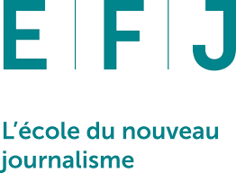

Bonsoiiiiiirrrr, bienvenue sur mon site

Profil
Étudiant en première année de journalisme, je souhaite mettre en pratique mes compétences au sein d’un environnement stimulant. Rigoureux, je me distingue par de solides compétences rédactionnelles. Curieux et ouvert d’esprit, j’aime travailler sur des problématiques variées.